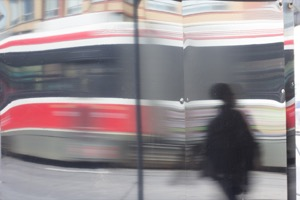
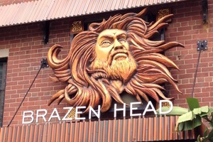

Click each thumbnail to see the full version of the image.
To return to the gallery, click anywhere on the page.
Cactus close-up

Street(car) sceneAn old road markerLake District sceneMontreal architectureChurch ceiling in FlorenceA dash of color

Coffee shop signPeek-a-boo bird